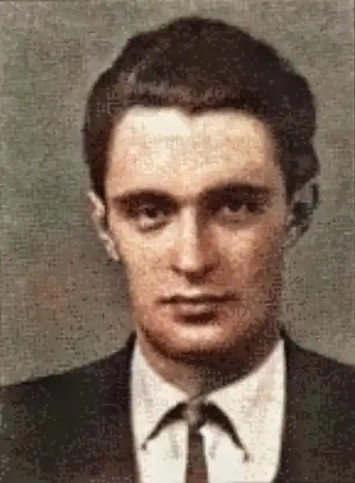

Народився Юрій Семенович Старостенко 13 червня 1923 року в місті Забєлишине в Білорусії. Батько його був фельдшером, а мати — медсестрою. Юрко мало не щодня навідувався до лісу, милувався його красою і непомітно для себе переймався глибокою любов'ю до рідної природи…
1934 року родина Старостенків переїхала до нової столиці України — Києва. Краса зустріла його і тут. Скільки близького, спорідненого до білоруської природи побачив хлопець у цьому краї, і скільки нового, небаченого потрапило в око пильного природолюба! Тут закінчив Юрій десятирічку, якраз напередодні війни з гітлерівцями. Першим бажанням випускника було кинутись у бій з ворогом. Та замість фронту його направили разом з іншими ровесниками в Донецьку область на жнива. Працювали хлопці до знемоги і зібрали все, до останньої зернини.
Пізніше Юрію Старостенкові випало служити у військах МВС, районному військкоматі міста Києва, у відділі охорони Дніпровського басейну. Але восени 1954 року, коли Юрію Старостенкові виповнилося всього тридцять літ, його спіткало непоправне горе — він тяжко захворів. Довгими безсонними ночами згадувалось життя, наповнене багатьма незабутніми подіями, марились білоруські бори, українські ліси — в пам'яті, виявляється, не згасли малюнки природи. То чому б не розповісти про все це людям? А тут ще й знайомство нещодавно сталося на пташиному базарі — з письменником Олександром Копиленком. Знову попливли довгі безсонні ночі, але вже не тільки в спогадах, а й у натхненній творчій праці над аркушами паперу… І ось 1958 року з'явилося друком перше оповідання Ю. Старостенка про природу Карпат "Рідні гори". А наступного року вийшла у світ перша книжка його природничих оповідань "Ловись, рибко!". Багато задумів не встиг здійснити Ю. Старостенко. 1965 року він помер.